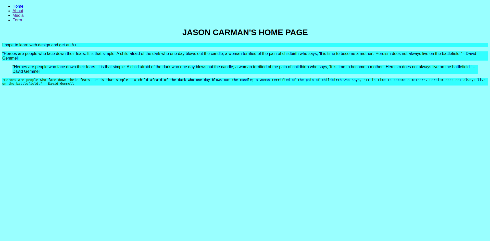

Lab 6 - CSS For Images & Tables
Overview
This week's lab will cover the following:
- Learning how to implement CSS to float images
- Learning how to apply CSS to stylize text
- Learning how to position HTML elements using CSS
Resizing and floating the image
Open your stylesheet (style.css). Before we float our image, we should probably resize it. You could open it in Photoshop or Paint (in Windows), but that takes additional time and work. Instead, we can resize the image using CSS. When you're resizing an image you should pick either the width or height to resize, and set the other to auto. You may have to play around with this a bit by making changes and refreshing in your browser. The following code will resize the image. Change the values as needed (since the size of your image might be bigger or smaller than mine).
img {
width: 25%;
height: auto;
}
Next, we're going to float the image to the left of the text by adding adding the float parameter in the img selector we just created.
img {
float: left;
}
If you refresh your page, you should notice the text now appears to the right of the image.
Stylizing our table
The first thing we're going to do, is give our table & the cells within a border. We're going to accomplish this using a complex selector.
th, td {
}
There are a couple different ways we can add a border. We can use the simpler, longer drawn out method of specifying each of the following:
- border-width: .25em;
- border-style: solid;
- border-color: #000000;
Alternatively, we can use a more complex shorthand to declare the same. The following would apply the exact same specifications as above, note the difference in syntax.
th, td {
border: .25em solid #000000;
}
Using the above syntax as an example, choose a thickness, style and colour for your border. The styles you have to choose from are:
- none
- hidden
- dotted
- dashed
- solid
- double
- groove
- ridge
- inset
- outset
Feel free to explore the use of the border-radius parameter with any of the table contents (tr, th, td).
Applying some finishing touches
Fixing the paragraph background color
You may notice your background colour from your paragraph appears behind your image. We can remove this by applying a class or id to that particular paragraph, and modify the left margin. You may need to play around with the units to get it to appear in a manor you're satisfied with. First, apply an ID to that paragraph.
<p id="about">
Now using a complex selector, modify the left margin for paragraphs with the id we just created.
p#about {
margin-left: 5em;
}
Increase this number as much as needed, until the paragraph background color appears similar to the provided sample (located at the end of the lab instructions).
Centering your table
The easiest way to center a table, is to set the left and right margin to auto. Use the following example to center your table.
table {
margin-left: auto;
margin-right: auto;
}
Cleaning up the table formatting
Add line breaks between each course code and room in your table, to make your timetable look nicer.
You may also want to increase the padding on your th & td tags, to make your table look a little nicer. To do that, find the td, th selector we used before and add the padding attribute (sample below). Feel free to play around with the values to get it where you like it.
td, th {
padding: .5em;
}
Completing the Lab
Upon completion of this lab you should have a web page with a picture of yourself, a paragraph or two about yourself and your course schedule as a table. Your page should validate using the w3schools html validator & css validator. Your page should look similar to the following:
Exploration Questions
- What does the float parameter do?
- What does setting the margin attribute to auto accomplish?